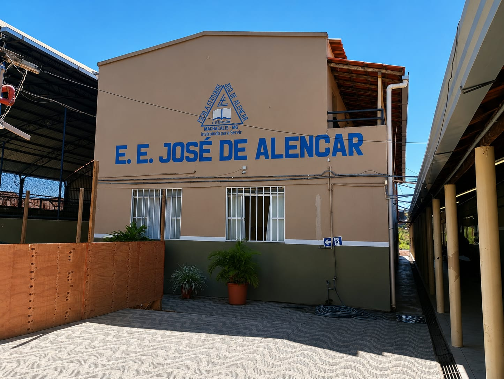
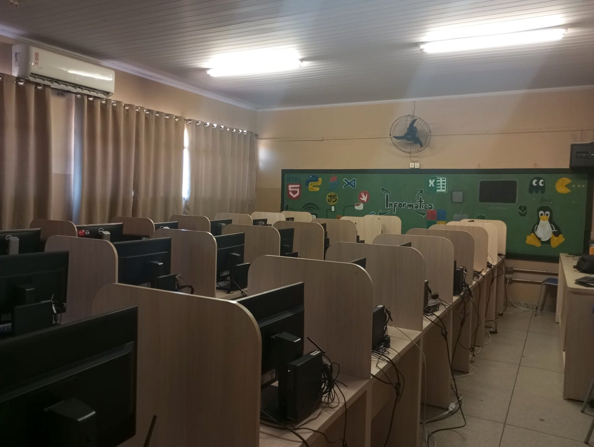
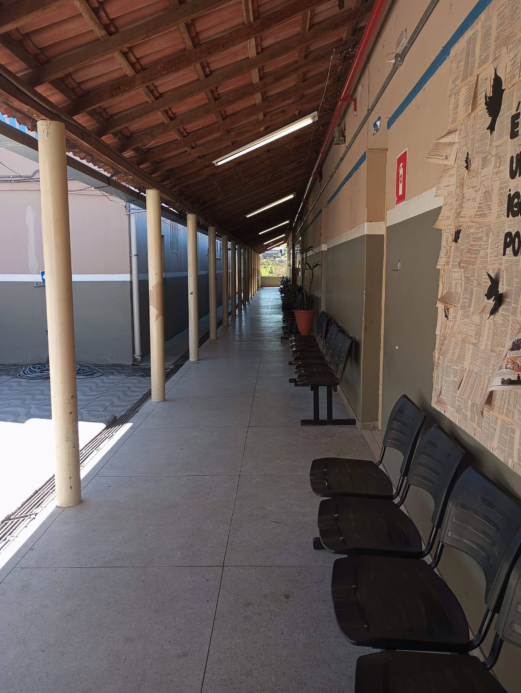
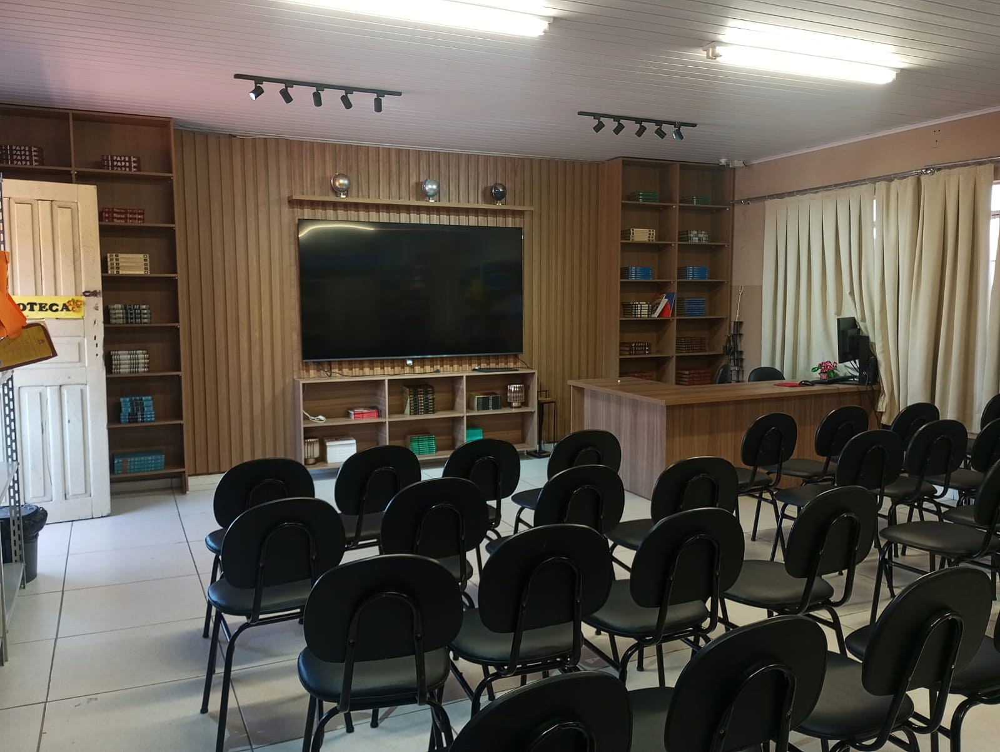
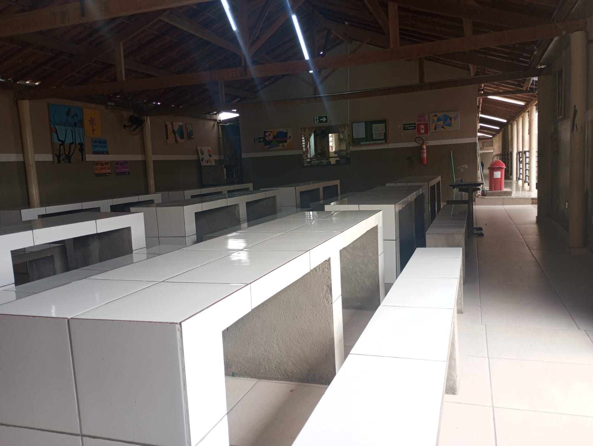
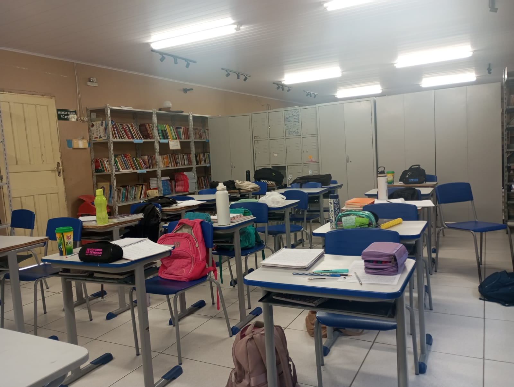

Conheça nossa estrutura
A Escola Estadual José de Alencar possui diferentes espaços que fazem parte da rotina dos estudantes. Cada ambiente contribui para o aprendizado, a convivência e o desenvolvimento dos alunos.
Nesta página você poderá conhecer alguns dos principais ambientes da escola e entender um pouco da importância de cada espaço para a comunidade escolar.

Fachada da Escola
A fachada da Escola Estadual José de Alencar representa um dos principais espaços de identificação da instituição.
É por esse espaço que estudantes, professores, funcionários e visitantes têm acesso à escola diariamente.
Além de fazer parte da identidade da instituição, a fachada representa o início de uma jornada de aprendizado, convivência e novas experiências para os estudantes.
Um espaço que representa nossa escola, nossa comunidade e nosso futuro.

Sala de Informática
A sala de informática é um espaço destinado às atividades relacionadas à tecnologia e ao uso de computadores.
O ambiente possui grande importância para os estudantes do Técnico em Informática, pois permite colocar em prática diversos conhecimentos aprendidos durante as aulas.
Nesse espaço podem ser realizadas pesquisas, trabalhos escolares, atividades de programação, desenvolvimento de sites e outras práticas relacionadas à informática.
Onde o conhecimento tecnológico se transforma em prática.

Corredor Principal
O corredor principal é um dos espaços de circulação da Escola Estadual José de Alencar.
Durante o dia, estudantes e professores passam pelo corredor para chegar às salas de aula e aos demais ambientes da escola.
Além de servir como ligação entre diferentes espaços, o corredor também faz parte da convivência diária dos estudantes, principalmente durante os intervalos e as trocas de aula.
Um caminho que conecta diferentes espaços e pessoas.

Biblioteca
A biblioteca é um ambiente dedicado à leitura, pesquisa e busca por conhecimento.
O espaço pode auxiliar os estudantes na realização de pesquisas, trabalhos escolares e atividades relacionadas à leitura e aos estudos.
A biblioteca também contribui para estimular o interesse pela leitura e ampliar o contato dos estudantes com diferentes conhecimentos e informações.
Um espaço onde a leitura abre novos caminhos para o conhecimento.

Refeitório
O refeitório é um espaço destinado às refeições dos estudantes durante a rotina escolar.
O ambiente proporciona um local adequado para que os alunos possam realizar suas refeições e aproveitar os momentos de descanso durante o período escolar.
Além da alimentação, o refeitório também é um espaço de convivência, onde os estudantes podem conversar e compartilhar momentos com seus colegas.
Um espaço de alimentação, convivência e união.

Sala de Aula
A sala de aula é um dos principais ambientes da Escola Estadual José de Alencar e é onde acontecem grande parte das atividades de aprendizagem.
Nesse espaço, os estudantes participam das aulas, realizam atividades, trabalhos e projetos orientados pelos professores.
A sala de aula também proporciona momentos de convivência, troca de conhecimentos e desenvolvimento das habilidades dos estudantes.
Onde o aprendizado acontece todos os dias.
Nossa estrutura em seis ambientes
Cada espaço possui uma função diferente, contribuindo para a experiência escolar dos estudantes.
Fachada
Representa a identidade da Escola Estadual José de Alencar.
Informática
Espaço destinado às atividades de tecnologia e informática.
Corredor
Área de circulação e ligação entre diferentes ambientes da escola.
Biblioteca
Ambiente destinado à leitura, pesquisa e estudos.
Refeitório
Espaço destinado às refeições e à convivência dos estudantes.
Sala de Aula
Ambiente onde acontecem as aulas, atividades e momentos de aprendizagem.
Um espaço para aprender e crescer.
A estrutura da escola faz parte da experiência dos estudantes todos os dias. São ambientes onde acontecem aulas, pesquisas, atividades práticas, momentos de convivência e muitas experiências que fazem parte da vida escolar.